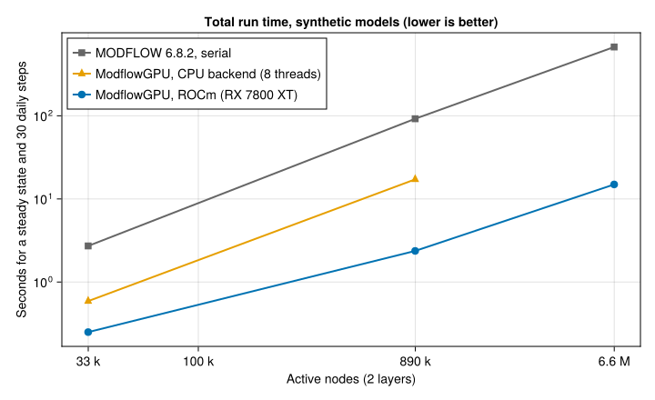
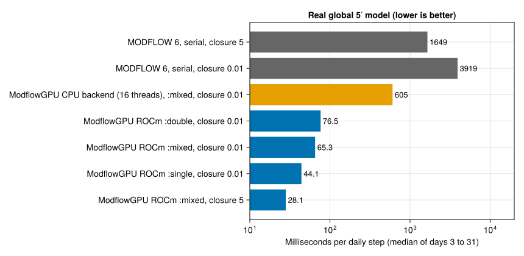
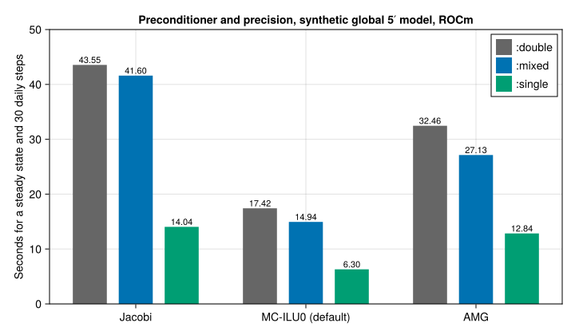

Performance
This page says how much faster ModflowGPU is than MODFLOW 6 on the models it was timed on, and when to expect a gain. Every number comes from a result file in benchmark/results/, named next to the number; the date is the start of the file name. The figures are drawn when this manual is built from values copied from those files (docs/src/assets/performance.toml), and the build fails if a value no longer matches its file. Nothing is measured when the manual is built.
All timings are from one machine: an AMD Radeon RX 7800 XT (16 GB) with ROCm 7.2.2, an AMD Ryzen 7 7700 (8 cores, 16 threads) and Julia 1.12.6 (hardware.md, 2026-11-06). Only ROCm on this GPU was timed; no NVIDIA, Apple or Intel GPU and no larger or smaller AMD GPU. The speed-ups below are for this card and this CPU, and for the models listed. MODFLOW 6 was run serially (one core), since the MODFLOW 6 builds used have no parallel mode.
What to expect
- A large model with many time steps: on the real global model (3.7 million active cells in 2 layers), the MODFLOW part of one daily step takes 65 ms on the GPU against 3.9 s for serial MODFLOW 6 at the same closure criteria, about 60 times faster (
2026-11-15-T5.6.md). Both stop at the same closure criteria and give the same heads to 4e-11 m. - MODFLOW 6 with its usual loose closure stops after one iteration per step and is faster per step (1.6 s) but leaves the heads up to 0.51 m from the converged solution after 31 days. Against that setting the GPU, which here uses a closure of 0.01 and is 4e-9 m from converged, is about 25 times faster (
2026-11-15-T5.6.md). - The CPU backend of ModflowGPU (all 16 threads, no GPU) is 6 to 10 times faster than serial MODFLOW 6 on that model (
2026-11-15-T5.6.md). The CPU backend uses ModflowGPU's own preconditioner (see Effect of the preconditioner), not MODFLOW 6's. - A small model (the 33,000-cell Indus basin) takes 0.16 s for a steady state and 30 daily steps on the GPU (
2026-11-16-T4.7.md); MODFLOW 6 took 2.7 s (2026-11-07.md). The gain is real but the model is quick either way.
The GPU gain is a gain in throughput: it pays when there are many cells, many time steps or many runs. The speed-up numbers are for these models and these closure criteria; your model may behave differently, in particular if its steady state is hard to converge (see the GPU guide).
When the GPU helps

Steady state plus 30 daily steps on the synthetic coupling models (2 layers, rivers, drains, recharge, evapotranspiration), tight closures, :mixed precision, default preconditioner. ModflowGPU values: 2026-11-08-T4.4.md (2026-11-08, same session and code for both backends); MODFLOW 6.8.2, serial, with ILU0: 2026-11-07.md (2026-11-07). The CPU backend was not timed on the 6.6 million cell model with the default preconditioner.
| Model | Active nodes | MODFLOW 6 (serial) | CPU backend | GPU (ROCm) |
|---|---|---|---|---|
| Indus | 32,972 | 2.72 s | 0.59 s | 0.25 s |
| Continental | 888,300 | 92.2 s | 17.2 s | 2.37 s |
| Global 5′ | 6,592,790 | 673 s | not timed | 14.9 s |
Sources: MODFLOW 6 2026-11-07.md; CPU backend and GPU 2026-11-08-T4.4.md. (Later solver improvements made the GPU faster still: 0.16 s, 1.51 s and 8.74 s, 2026-11-16-T4.7.md, 2026-11-16; the other two columns were not re-timed.)
Reading the figure:
- Where the GPU wins most is at large sizes. The ratio of GPU to CPU backend grows from 2.4 times (33,000 cells) to 7.3 times (890,000 cells), and the GPU is about 39 times faster than serial MODFLOW 6 on the continental model and 45 times on the global model (MODFLOW 6 timed on another day,
2026-11-07.md). The solver is limited by memory bandwidth: its matrix-vector product runs at about 300 to 340 GB/s on the GPU and 38 to 56 GB/s on the CPU backend (2026-11-07.md); the plain array copy measures 466 GB/s and 40 GB/s (hardware.md). - Where the gain shrinks: at small sizes a GPU spends its time launching kernels. One linear iteration on the Indus model takes 74 microseconds on the GPU, of which at least 40 are launch and synchronisation overhead that does not depend on size (
2026-11-16-T4.7.md). Below about 30,000 cells, nothing was timed, and no cross-over with the CPU backend was found: at every size timed, the GPU is faster than the CPU backend. Expect little gain for models much smaller than the Indus model, where the run takes a fraction of a second anyway. - A hard steady state can be the exception even for the GPU. With the simple Jacobi preconditioner, the Indus steady state took 1.10 s on the GPU against 0.34 s for serial MODFLOW 6 (
2026-11-07.md); with the default preconditioner it takes 0.08 s (2026-11-16-T4.7.md). - The CPU backend is a fallback and a way to run without a GPU. On the largest model timed with Jacobi (the global model), it takes 364 s against 673 s for serial MODFLOW 6 (
2026-11-07.md); with the default preconditioner it is faster again, but the large model was not timed that way.
Time per time step and per iteration
Steady state and daily steps on the synthetic models, ROCm, default preconditioner, closures as in the benchmark (heads converged to 1e-9 m). One outer iteration is one pass of assembling the equations and solving them; a time step takes several.
| Model | Precision | Steady state | Daily step | Steady state per inner iteration | 31 steps in all |
|---|---|---|---|---|---|
| Indus (33 k cells) | :mixed | 0.08 s | 0.003 s | 74 µs | 0.16 s |
| Continental (890 k) | :mixed | 0.69 s | 0.027 s | 603 µs | 1.51 s |
| Global 5′ (6.6 M) | :double | 3.09 s | 0.217 s | 5511 µs | 9.61 s |
| Global 5′ (6.6 M) | :mixed | 2.70 s | 0.201 s | 4814 µs | 8.74 s |
| Global 5′ (6.6 M) | :single | 0.97 s | 0.086 s | 3655 µs | 3.55 s |
Source: 2026-11-16-T4.7.md (2026-11-16, RX 7800 XT). The "per inner iteration" column is the steady-state time divided by the number of linear iterations, so it includes the assembly done once per outer iteration.
On the global model, a daily step takes 8.3 outer iterations and 26 linear iterations in :double and :mixed (5.2 and 13 in :single), because the benchmark closures are tight (2026-11-16-T4.7.md); that is about 24 ms per outer iteration in :mixed (0.201 s divided by 8.3, derived). Within one outer iteration, in :mixed on the global model: assembling the equations 4.98 ms, setting up the preconditioner 0.86 ms, and per linear iteration about 1.8 ms for the matrix-vector product, 1.45 ms for the preconditioner and 0.63 ms for the vector update; one flow and budget calculation per time step takes about 18 ms (2026-11-16-T4.7.md). The largest parts are memory-bound, running at 80 to 90 % of the speed of a plain array copy (2026-11-16-T4.7.md), so there is no large gain left without changing the data layout.
The real global model

Median over days 3 to 31 (days 3 to 10 for the CPU backend) of the MODFLOW part of a daily step, real global 5′ model, all 3,675,450 active cells, 31 daily steps from 1979-01-01. Source: 2026-11-15-T5.6.md (2026-11-15, RX 7800 XT and Ryzen 7 7700). The MODFLOW 6 in this test is libmf6 6.3.0, serial. The closure number is the head and flow closure of both solvers; "5" is the MODFLOW 6 default of the coupling.
| Engine | Closure | ms per day | Outer / inner iterations per day | Speed-up over MODFLOW 6 at the same closure |
|---|---|---|---|---|
| MODFLOW 6 (serial) | 5 | 1649 | 1 / 1 | |
| MODFLOW 6 (serial) | 0.01 | 3919 | 3 / 5 | |
ModflowGPU, ROCm :mixed | 5 | 28.1 | 1 / 1 | 59 times |
ModflowGPU, ROCm :mixed | 0.01 | 65.3 | 3 / 5 | 60 times |
ModflowGPU, ROCm :double | 0.01 | 76.5 | 3 / 5 | 51 times |
ModflowGPU, ROCm :single | 0.01 | 44.1 | 3 / 5 | 89 times |
ModflowGPU, CPU backend :mixed | 0.01 | 605 | 3 / 5 | 6.5 times |
Source for the table: 2026-11-15-T5.6.md. Of the 65.3 ms in :mixed at closure 0.01, 62.4 ms is the solve (3 outer iterations, about 21 ms each), 1.6 ms is setting the input and 1.3 ms is writing the output of the step. In a coupled run with the mGV hydrology model on the same GPU, one day takes 89 ms in all (23 ms mGV, 65.5 ms MODFLOW and the exchange) (2026-11-15-T5.5b.md, 2026-11-15).
Notes on this comparison:
- MODFLOW 6 in this test used the COMPLEX solver settings of the coupling. With simpler ILU0 settings and no backtracking, MODFLOW 6.8.2 was about a third faster per day, which brings the
:mixedspeed-up at closure 0.01 to about 48 times (one run each, in the review section of2026-11-15-T5.6.md). - The time to build the model and the first step are not included (they include compilation on the first call). On the global model the model build took 20 s for ModflowGPU against 46 s for MODFLOW 6 (writing its input files and reading them), and the first day 9 to 10 s for ModflowGPU against 15 to 23 s (
2026-11-15-T5.6.md). - A single 31-day period of the real model was timed, not a year.
GPU memory use
The whole model is on the GPU. On the synthetic global model (6.6 million active cells), the peak GPU memory with the default preconditioner is 4.20 GiB in :double, 4.01 GiB in :mixed and 2.84 GiB in :single, about 0.64, 0.61 and 0.43 GiB per million cells (2026-11-16-T6.1.md, 2026-11-16, RX 7800 XT). That is a quarter of the 16 GB card in :mixed. The GPU guide gives a rule of thumb for planning.
The memory of the arrays alone, without a preconditioner other than Jacobi, is 307 to 310 bytes per node in :single and 488 to 492 bytes in :double; the measured pool peak equals these arrays, so nothing is allocated during the run (docs/dev/scaling.md, 2026-11-07.md).
The real global model with the coupling needs more per node than the synthetic one: MODFLOW took 3253 MiB of GPU memory for 3.68 million active nodes (0.9 GiB per million). With the mGV model beside it the pool peaks at 5.1 GiB, and the card at 7.06 GiB net during the spin-up (2026-11-15-T5.5b.md). A 30-arcsecond global model would need about 190 GiB in :single (an estimate, docs/dev/scaling.md) and does not fit one card.
Effect of the precision

Synthetic global 5′ model (6.6 million cells), steady state plus 30 daily steps, ROCm. Source: 2026-11-08-T4.4.md (2026-11-08, RX 7800 XT; the ordering of the precisions holds in the later 2026-11-16-T4.7.md, which timed only the default preconditioner).
:single is 2 to 3 times faster than :double here and uses about a third less memory, but its heads are 1e-6 to 2e-4 m from the :double ones on these models (2026-11-08-T4.4.md; GPU guide). :mixed is 14 % faster than :double with the default preconditioner (14.9 s against 17.4 s, 2026-11-08-T4.4.md) and gives the same heads and iteration counts; the later numbers are 8.74 s against 9.61 s (2026-11-16-T4.7.md). On the CPU backend :mixed and :double are within 7 % of each other (2026-11-08-T4.4.md).
Effect of the preconditioner
The figure above also shows the three preconditioners. MC-ILU0, the default, is the fastest over a whole run on every model, backend and precision timed (2026-11-08-T4.4.md). On the global model in :mixed:
| Preconditioner | Steady state | Daily step | Linear iterations (steady state) | Peak GPU memory |
|---|---|---|---|---|
| Jacobi | 25.9 s | 0.524 s | 8134 | 2.99 GiB |
| MC-ILU0 (default) | 3.36 s | 0.386 s | 561 | 3.56 GiB |
| AMG | 4.52 s | 0.754 s | 102 | 4.28 GiB |
Source: 2026-11-08-T4.4.md (2026-11-08, RX 7800 XT). Later improvements to the default preconditioner (daily step 0.201 s, 2026-11-16-T4.7.md) were not made for the others.
- Jacobi needs 15 times the iterations, but each is cheap and it uses the least memory. It is about 8 times slower than the default on the steady state.
- AMG needs the fewest iterations, but each costs more, and it needs about 20 % more memory than MC-ILU0. It was faster than MC-ILU0 only in the steady state of the two smaller models (for example 0.68 s against 0.88 s on the continental model on the GPU, 3.4 s against 6.8 s on the CPU backend) and is the option to try for a steady state that does not converge (GPU guide).
- MODFLOW 6 uses ILU0 (or ILUT), which does not run in parallel; ModflowGPU's MC-ILU0 is an ILU0 in a colour order that does. Because the factorisation differs, the iteration counts differ from MODFLOW 6's.
Hardware
| GPU | AMD Radeon RX 7800 XT, 16 GB, specification peak bandwidth 624 GB/s; measured 445 GB/s (Float32) and 466 GB/s (Float64) on a plain array operation |
| CPU | AMD Ryzen 7 7700, 8 cores, 16 threads; measured 39.8 GB/s with 8 threads |
| Software | Julia 1.12.6, ROCm 7.2.2, KernelAbstractions 0.10.5 to 0.10.7, AMDGPU 2.11 |
Source: hardware.md (2026-11-06) and the header of each result file. A solver step that moves a few hundred GB/s on this card is 70 to 77 % of the measured peak (2026-11-08-T4.5.md), so the speed-up you get on another GPU should scale roughly with its memory bandwidth, but that was not measured.